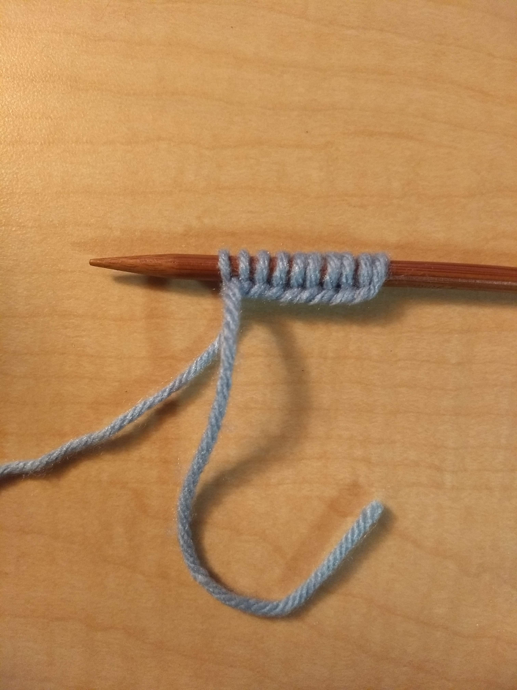
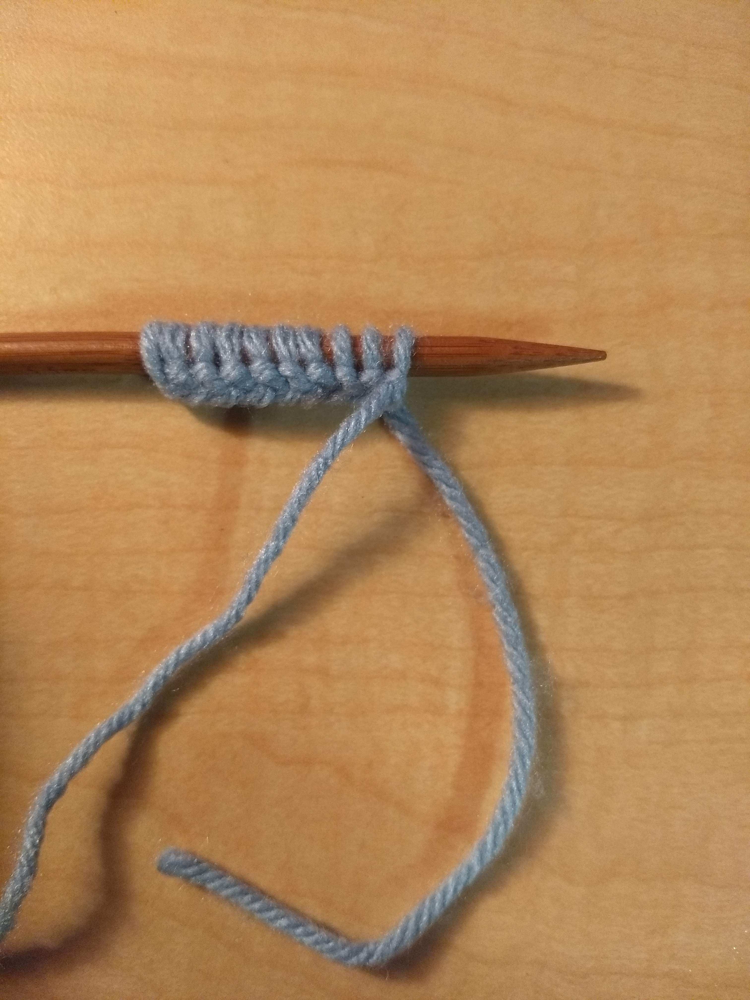
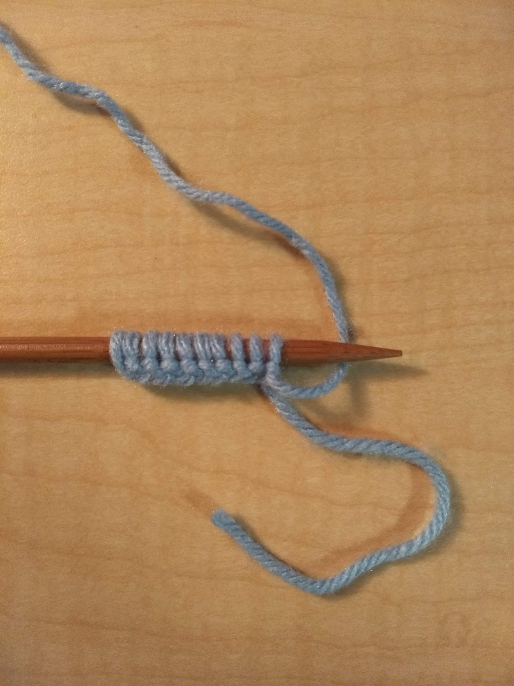
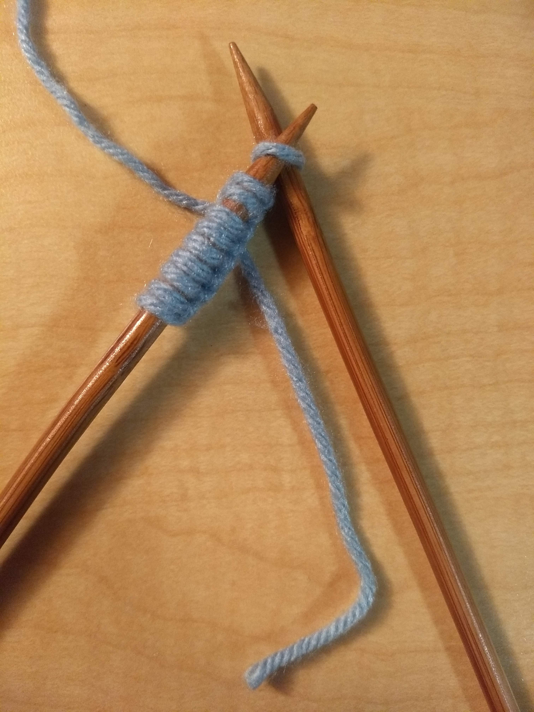
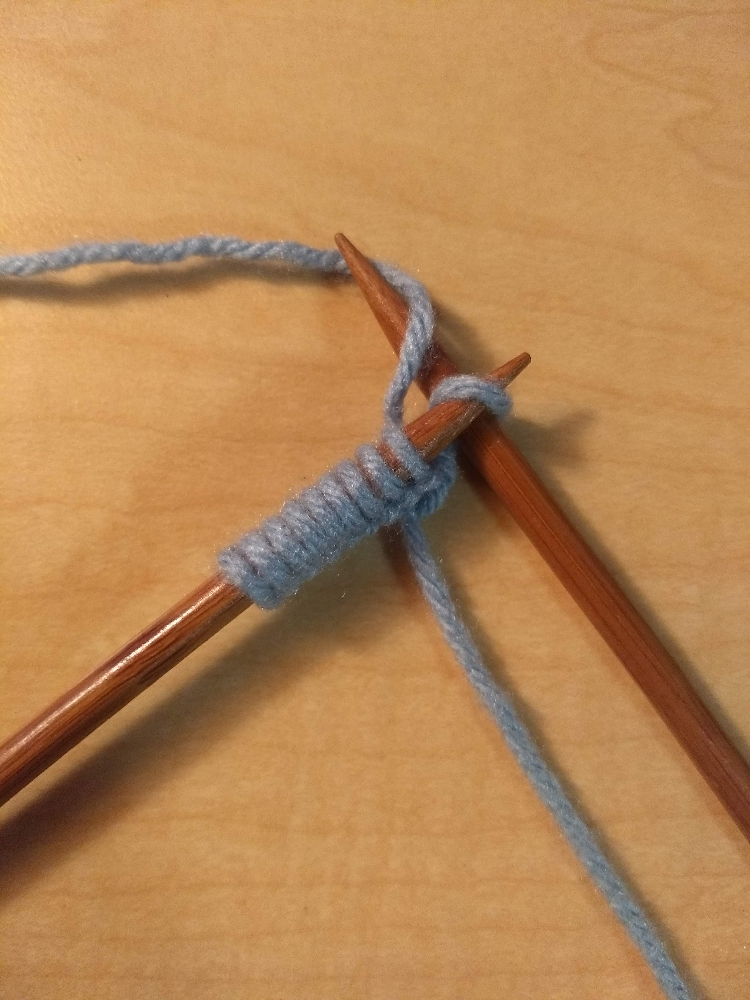
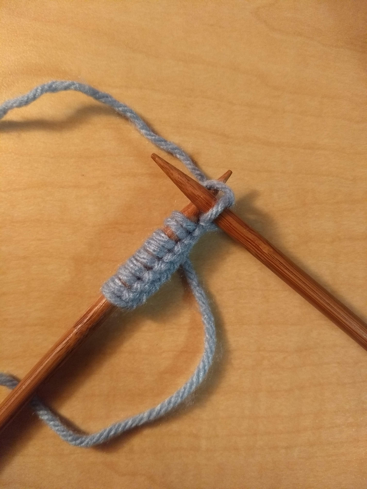
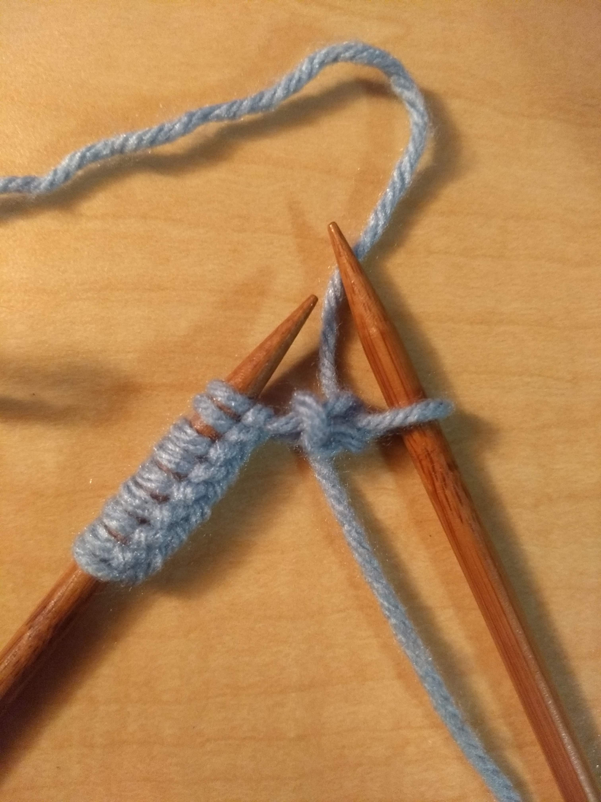

After casting on, your work should look something like this:

The basic instructions for working knit stitches are as follows:
Step 1: Turn or flip the work

Step 2: Move the yarn that is connected to the ball so that it is behind the needle

Step 3: Insert your right needle into the first stitch

Step 4: Wrap the yarn from left to right across the top of the inserted needle

Step 5: Pull the new loop on the right needle through the loop on the left needle

Step 6: Pull the stitch off of the left needle

Repeat these instructions for each stitch, turning the whole work at the end of each row.
Here is a video that more clearly shows how to work the knit stitch:
For your scarf you will just keep knitting and turning your work until the
rectangle is as long as you want it to be.